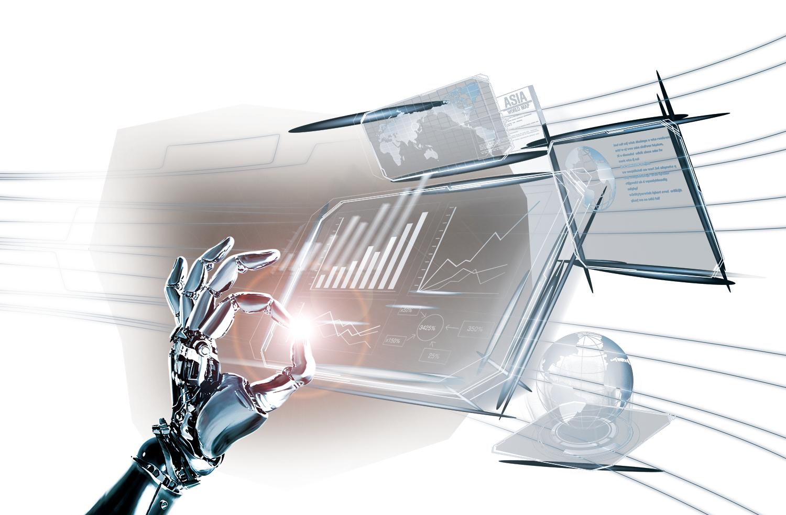

Обследование проводится на современном оборудовании
Проектор знаков
Проверка зрения на современном проекторе знаков который имеет несколько режимов для проверки остроты зрения разных возрастных групп и диагностирования различных заболеваний
Авторефрактометр
Авторефрактометрия - компьютерная диагностика зрения
Щелевая лампа
Осмотр на щелевой лампе позволяет оценить состояние тканей переднего отрезка глаза: состояние конъюнктивы (исключить или подтвердить конъюнктивит вирусный, бактериальный или аллергический), состояние роговицы(кератиты), хрусталика (катаракты), радужки и водянистой влаги (увеиты), стекловидного тела (деструкции, гемофтальм, эндофтальмит). А с помощью различных высокодиоптрийных линз можно оценить состояние сетчатки, сосудов (отслойка сетчатки, тромбоз, ВМД) и зрительного нерва (глаукома, неврит, атрофия). На данном аппарате имеются 4 цветофильтра для точной диагностики этиологии, глубины, обширности патологического процесса
Icare
Измерение внутриглазного давления с помощью нового аппарата из Финляндиии "Icare" (добытого с таким большим трудом в наше время). Данная методика позволяет быстро, безболезненно, безопасно, высокоточно, что самое главное, и без "заморозки" глаз измерять внутриглазное давление. Данную процедуру рекомендовано проводить всем лицам старше 40 лет для исключения такого страшного заболевания, как глаукома, и по другим показаниям. Также у нас в центре можно измерить внутриглазное давление по старинке грузиками:).
Обследование проводится на современном оборудовании
Проверка зрения на современном проекторе знаков который имеет несколько режимов для проверки остроты зрения разных возрастных групп и диагностирования различных заболеваний
Авторефрактометрия - компьютерная диагностика зрения
Осмотр на щелевой лампе позволяет оценить состояние тканей переднего отрезка глаза: состояние конъюнктивы (исключить или подтвердить конъюнктивит вирусный, бактериальный или аллергический), состояние роговицы(кератиты), хрусталика (катаракты), радужки и водянистой влаги (увеиты), стекловидного тела (деструкции, гемофтальм, эндофтальмит). А с помощью различных высокодиоптрийных линз можно оценить состояние сетчатки, сосудов (отслойка сетчатки, тромбоз, ВМД) и зрительного нерва (глаукома, неврит, атрофия). На данном аппарате имеются 4 цветофильтра для точной диагностики этиологии, глубины, обширности патологического процесса
Измерение внутриглазного давления с помощью нового аппарата из Финляндиии "Icare" (добытого с таким большим трудом в наше время). Данная методика позволяет быстро, безболезненно, безопасно, высокоточно, что самое главное, и без "заморозки" глаз измерять внутриглазное давление. Данную процедуру рекомендовано проводить всем лицам старше 40 лет для исключения такого страшного заболевания, как глаукома, и по другим показаниям. Также у нас в центре можно измерить внутриглазное давление по старинке грузиками:).